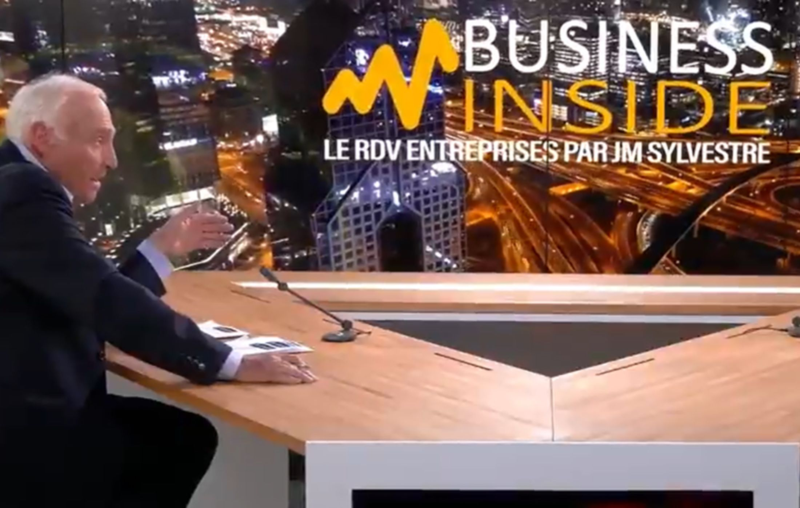

Cycle en cours
Logement & fabrique des territoires
Des situations où un projet tient encore en apparence, mais où ses arbitrages se tendent déjà entre financement, droit, marché, exécution et territoire.
En Plateau prépare des prises de parole à partir de tensions réelles, de points de bascule identifiables et d’arbitrages concrets, pour éclairer ce qui se transforme dans les organisations, les filières et les territoires.
Si vous avez été contacté sur LinkedIn, ce n’est pas pour occuper un format. C’est parce que votre position peut aider à rendre une situation plus lisible, plus située et plus utile à d’autres acteurs de décision.
L’échange éditorial permet de qualifier la justesse de l’angle, la portée de votre lecture et les conditions d’une intervention solide. Si vous n’avez pas été contacté, vous pouvez toutefois signaler une contribution.
En Plateau cadre des prises de parole destinées à être exprimées dans des formats audiovisuels animés par des journalistes économiques, afin de rendre plus lisibles des sujets sensibles, techniques ou structurants.
Les formats sont réalisés avec des sociétés de production partenaires et diffusés dans des cadres médiatiques clairement identifiés. Le travail en amont vise une parole tenable publiquement, lisible éditorialement et utile au-delà du seul moment de diffusion.




Beaucoup de prises de parole décrivent une transformation. Peu font apparaître clairement la tension, le point de bascule et l’arbitrage qu’elle impose.
Votre intervention est cadrée à partir d’un angle précis, pour rendre visible ce qui se joue réellement, sans simplification excessive, sans surjeu, sans surexposition inutile.
Votre lecture prend davantage de valeur lorsqu’elle apparaît aux côtés d’autres positions engagées sur les mêmes tensions : financement, droit, stratégie, exécution, industrie, territoire.
Une activité se développe, un projet avance, une transformation s’accélère, puis les équilibres habituels cessent de suffire pour décider comme avant.
Les tensions peuvent se situer entre financement, cadre, marché, exécution, chaîne productive, rythme de transformation ou allocation du risque.
Non pour commenter de loin, mais pour aider à comprendre à partir de quand une situation change de nature, qui elle affecte réellement, et ce qu’elle oblige à décider.
Chaque cycle ouvre un ensemble de conversations construites à partir de points de bascule réels, où plusieurs lectures se croisent sans jamais se confondre.
Des situations où un projet tient encore en apparence, mais où ses arbitrages se tendent déjà entre financement, droit, marché, exécution et territoire.
Des situations où l’activité se poursuit, mais où ses arbitrages se tendent déjà entre compétitivité, chaîne productive, transformation, dépendances et allocation du risque.
Le site permet de comprendre la logique des cycles en cours. La pertinence d’un point d’entrée, d’un angle ou d’une intervention se travaille ensuite dans le cadre d’un échange éditorial.
Toutes les décisions ne sont pas prises par ceux qui les portent officiellement. Certaines positions sécurisent, qualifient, rendent possible, objectivent ou orientent ce que les autres peuvent réellement faire. Les cycles en cours donnent à voir ces positions sans les réduire à un métier ni à une place unique dans l’organigramme.
Des positions depuis lesquelles les arbitrages réels deviennent plus lisibles : sécurité juridique, montage, financement, faisabilité, marché, capital, exécution.
Explorer les positions - Opérations immobilièresDes positions qui rendent plus lisibles les arbitrages réels de l’industrie : stratégie, opérations, financement, cadre réglementaire, chaîne productive, dépendances, risque.
Explorer les positions - IndustrieAucune de ces positions ne décide seule. Chacune éclaire, infléchit ou rend possible ce que les autres peuvent réellement décider.
Votre contribution est préparée en amont, tenue dans un cadre éditorial précis, puis produite dans des conditions qui permettent d’en prolonger la portée.
Chaque intervention est cadrée à partir d’une situation identifiable, d’une tension réelle et d’un point de bascule que votre position permet d’éclairer.
Le travail éditorial permet de rendre votre lecture plus claire, plus située et plus utile, sans vous pousser vers une parole artificielle ou surexposée.
L’émission courte et son prolongement écrit permettent de conserver une trace structurée de votre lecture, réutilisable dans votre écosystème professionnel.
Votre intervention reste singulière, mais elle gagne en portée lorsqu’elle apparaît aux côtés d’autres lectures engagées sur les mêmes tensions et les mêmes arbitrages.
Une prise de parole bien préparée ne modifie pas seulement ce qui est dit. Elle modifie aussi la manière dont votre position est comprise, retenue et sollicitée dans votre écosystème professionnel.
Votre contribution aide à comprendre à quel moment votre lecture devient décisive : ce qu’elle sécurise, ce qu’elle qualifie, ce qu’elle rend possible ou ce qu’elle permet d’arbitrer autrement.
Dans un univers où beaucoup de prises de parole se ressemblent, votre lecture devient plus située, plus identifiable et plus difficile à confondre avec une expertise générique.
La prise de parole réalisée peut ensuite nourrir des prises de contact, des recommandations et des rapprochements plus cohérents avec votre positionnement réel et les sujets sur lesquels vous souhaitez être attendu.
Les échanges sont ouverts aux personnes déjà identifiées, ainsi qu’aux acteurs qui souhaitent signaler la pertinence de leur position dans l’un des cycles en cours.
Cet échange permet de vérifier la justesse de votre angle, la portée réelle de votre lecture et les conditions d’une intervention crédible, utile et tenable.
Demander un échange éditorialL’échange éditorial ne vaut pas engagement automatique. Il sert à vérifier la pertinence de l’angle, la qualité de la lecture et les conditions de préparation.
Vous pouvez signaler la pertinence de votre lecture sur l’un des sujets ou cycles en cours. Chaque signalement est examiné au regard du travail éditorial engagé.
Signaler une contributionLes positions visibles sur le site ne valent pas ouverture générale. Elles donnent à comprendre les types de lectures, de tensions et d’interventions que les cycles en cours cherchent à mettre en regard.